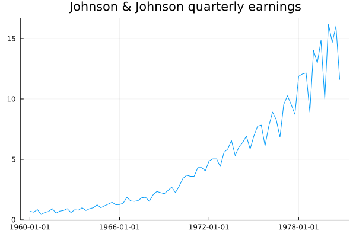
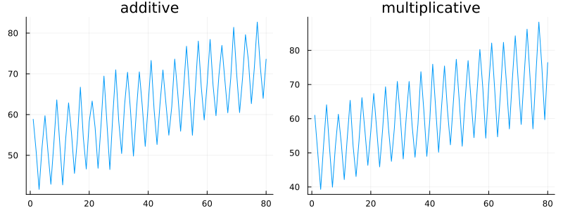
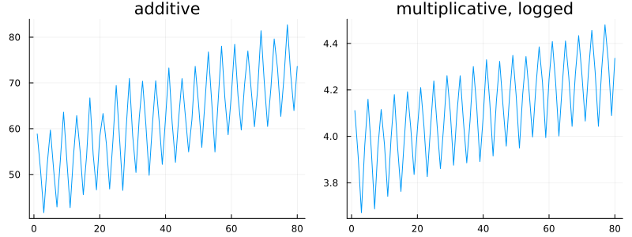
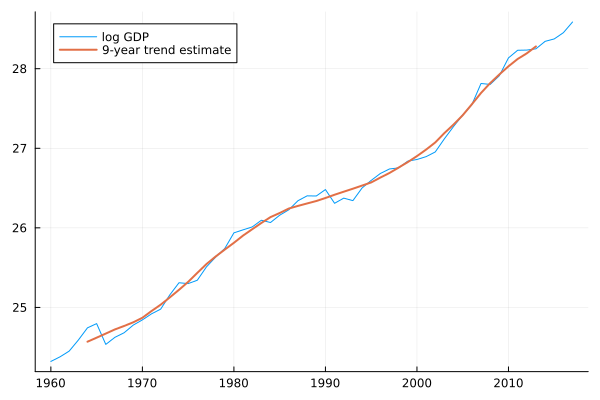
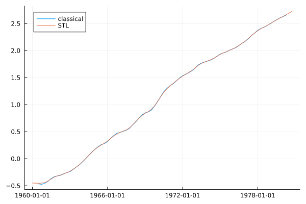
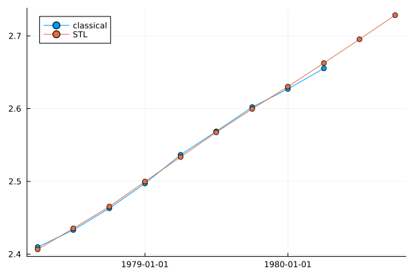
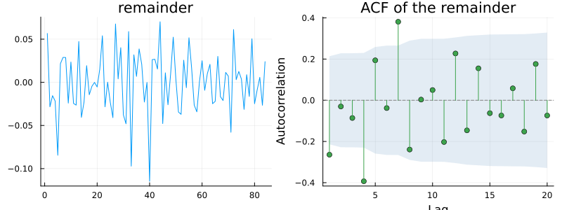

Components
using TSAnalytics, Plots
jj = dataset("jj")
plot(jj.date, jj.value; title="Johnson & Johnson quarterly earnings", legend=false)
Every chapter since the first has described series like this one using three words — trend, seasonality, remainder — without anyone stopping to define them. The upward sweep across two decades is the trend. The four-quarter wiggle riding on top of it is the seasonality. Whatever is left once both are accounted for is the remainder. The words work because they name genuinely different mechanisms behind the numbers: a company growing, a calendar repeating four times a year, and everything nobody modelled. This chapter makes that vocabulary precise before the next three chapters put it to work.
Adding or multiplying?
using Random
Random.seed!(4)
t = 1:80
additive = 50 .+ 0.3 .* t .+ 10 .* sin.(2π .* t ./ 4) .+ randn(80)
multiplicative = (50 .+ 0.3 .* t) .* (1 .+ 0.2 .* sin.(2π .* t ./ 4)) .+ randn(80)
p1 = plot(additive; title="additive", legend=false)
p2 = plot(multiplicative; title="multiplicative", legend=false)
plot(p1, p2; layout=(1,2), size=(800,300))
In the additive series the seasonal swing is the same size at the start as at the end. In the multiplicative series it scales with the level — the swing at t=80 is visibly larger than at t=1. Real series are usually closer to the multiplicative case, because most things that grow do so proportionally: a company selling twice as much has twice the Christmas peak, not the same Christmas peak added on top of a bigger base.
p1 = plot(additive; title="additive", legend=false)
p2 = plot(log.(multiplicative); title="multiplicative, logged", legend=false)
plot(p1, p2; layout=(1,2), size=(800,300))
Logged, the multiplicative series now looks like the same kind of object as the additive one — constant-width swings around a smoothly moving level — because taking logs turns multiplication into addition exactly: log(T × S × R) = log T + log S + log R. This is why Chapter 7 came before Part III rather than after it. The transform is not a convenience bolted on afterwards; it is what lets a single machinery serve both cases, and a multiplicative decomposition of a series and an additive decomposition of its log are, underneath, the same operation.
Trend, or trend-cycle?
economy = dataset("global_economy")
idx = findall(==("India"), economy.Country)
gdp = economy.GDP[idx]
yrs = economy.Year[idx]
loggdp = log.(gdp)
trend_est = moving_average(loggdp, 9)
plot(yrs, loggdp; label="log GDP", legend=:topleft)
plot!(yrs, trend_est; label="9-year trend estimate", linewidth=2)
India's GDP, 1960 to 2017, log scale. The extracted "trend" here is not a straight line and does not come close to being one — it rises, flattens for a stretch, and rises again at a different pace. What a smoother like this actually pulls out is trend and business cycle together, tangled into one curve, which is why the careful name for it is trend-cycle rather than simply trend. Classical decomposition cannot separate the two pieces, and neither can STL in Chapter 15 — the cycle is slow, the trend is slower, and no filter distinguishes two things that differ only in degree, not in kind. Chapter 41's unobserved-components models can, because they impose an explicit structure on the two pieces rather than filtering blindly, and that capability is a real reason to reach for them later in this book.
Most introductory treatments skip this distinction, and it matters. A reader who takes "trend" to mean "the underlying growth path the economy will return to" will misread every decomposition in the three chapters that follow.
Whose trend?
logy = log.(jj.value)
r_classical = classical_decompose(logy, 4)
r_stl = stl_decompose(logy, 4)
plot(jj.date, r_classical.trend; label="classical", legend=:topleft)
plot!(jj.date, r_stl.trend; label="STL")
valid = .!isnan.(r_classical.trend)
maxdiff = maximum(abs.(r_classical.trend[valid] .- r_stl.trend[valid]))
println("max abs difference where both are defined: ", round(maxdiff, digits=4))
println("classical NaNs: ", count(isnan, r_classical.trend), " STL NaNs: ", count(isnan, r_stl.trend))max abs difference where both are defined: 0.0235
classical NaNs: 4 STL NaNs: 0Same data, same log transform, two respected methods — and two genuinely different answers. The curves track each other closely but do not coincide, differing by as much as 0.024 on the log scale, which in level terms is a gap of a couple of per cent in the trend estimate at the point they diverge most. More strikingly, the classical trend simply does not exist for the first two and the last two observations, while STL's does for all eighty-four.
n = length(jj.value)
plot(jj.date[(n-10):end], r_classical.trend[(n-10):end]; label="classical", marker=:circle, legend=:topleft)
plot!(jj.date[(n-10):end], r_stl.trend[(n-10):end]; label="STL", marker=:circle)
Zoomed on the final years, this is exactly where the two methods differ most, and exactly where anyone forecasting the series actually looks. Classical decomposition's centred moving average needs observations on both sides of every point it estimates; at the end of the series there are none to the right, so it simply stops. STL fits a one-sided loess instead and keeps going — a genuine capability, but one with its own consequences rather than a free upgrade, since a one-sided fit is supported by less information than a centred one.
This is not two packages disagreeing about a single well-defined quantity the way earlier chapters' boxes were. It is two entirely different definitions of trend, applied to the same data, and there is no third, true trend that either one is approximating. Every trend is the output of a filter; choosing a filter is choosing what counts as trend. That framing is worth holding onto, because it defuses a question readers ask constantly — which decomposition is correct — that simply has no answer to give.
What remains
p1 = plot(r_stl.resid; title="remainder", legend=false)
p2 = plot(acf(r_stl.resid, 1:20); title="ACF of the remainder")
plot(p1, p2; layout=(1,2), size=(800,300))
The remainder is defined by subtraction — whatever the trend and seasonal components did not claim. That makes it the natural place to check whether a decomposition actually worked, using exactly the tools already built in Part II: if the remainder still carries structure at the seasonal lag, the seasonal component did not capture everything it should have. Worth being honest about the circularity here, too — the remainder is not an independent estimate of anything. It is a residue, and its statistical properties depend entirely on the method that produced it, not on some property of the data alone.
Indian GDP growth is routinely discussed as though the trend were a fixed underlying rate the economy temporarily deviates from and eventually returns to. The trend-cycle distinction above says that framing is a modelling assumption, not an observed fact — and the choice carries real policy weight. If a slowdown is cycle, it reverses on its own given time. If it is trend, it does not, and treating one as the other leads to genuinely different policy conclusions. None of the decompositions in Part III can settle which is which, because none of them separates trend from cycle at all — worth knowing which question a tool cannot answer before reaching for it to answer one.
Where this leaves you
There is now vocabulary, and a warning attached to it. The next three chapters give three decomposition methods, in increasing order of flexibility, and each one constructs its trend and its seasonal component in a genuinely different way. Chapter 14 starts with the oldest and simplest of the three, which is still the one most people meet first.